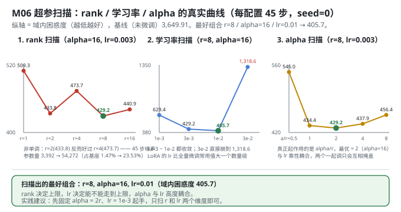
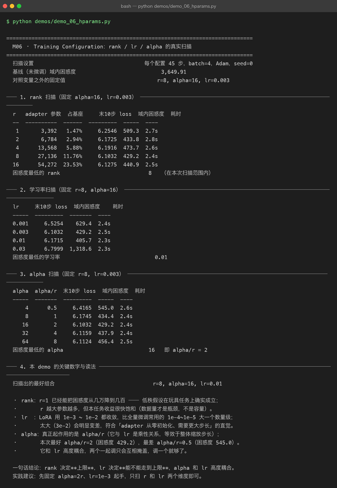

Milestone 06 — Training Configuration：r / lr / alpha，三个旋钮各管什么
M04 把 LoRA 搭起来了，M05 把基座压到了 4 bit。但超参一直是"抄来的"：r=8、alpha=16、lr=3e-3 从哪来？网上流传的经验值很多，本层全部实测 —— 同一基座、同一数据、同一 seed，只改一个变量，看末段 loss 与域内困惑度怎么动。
LoRA 只有三个真正需要调的超参：
r ：低秩维度。越大表达力越强，参数量线性增长。
alpha ：缩放系数。真正起作用的是 alpha/r，常用做法 alpha = 2r。
lr ：通常要比全量微调大一个数量级（adapter 从零初始化，基座已收敛）。纯 numpy 手写：没有 TrainingArguments，每次扫描就是重新 inject_lora + LoRATrainer.run(45) + evaluate，所以扫描的全部成本是"真跑"，不是查表。
1. Why：为什么必须自己扫一遍
三个理由：
- 经验值有适用范围。 "r=8、alpha=16" 是在 7B 级模型、几十万条数据上试出来的。本项目是 230K 参数、59 条样本 —— 量级差五个数量级，经验值最多当起点。
- 三个旋钮不是独立的。
alpha/r与lr是乘性关系（M04 已实测偏移与 alpha 成正比）。两个一起调只会互相掩盖，得先搞清楚谁管什么。 - "最优"本身可能是噪声。 45 步的扫描里，困惑度差几个百分点完全可能是 batch 顺序造成的。扫一遍才知道哪些差异是真的。
2. Design：单变量扫描
扫描设置：每个配置 45 步，batch=4，Adam，seed=0；基线（未微调）域内困惑度 3,649.91；对照变量之外的固定值是 r=8, alpha=16, lr=0.003。
每组输出：adapter 参数量、占基座比例、末 10 步 loss 均值、域内困惑度（在 59 条样本的答案区上评估）、耗时。
为什么同时看"末 10 步 loss"和"域内困惑度"：前者是训练过程中最后 10 个 batch 的 loss（样本少、噪声大），后者是全集评估。后面会看到两者给出不同的最优 lr —— 这正是要看两个指标的原因。

3. Real-run evidence（来自 demos/out/demo_06_hparams_terminal.txt）
3.1 rank 扫描（固定 alpha=16, lr=0.003）
| r | adapter 参数 | 占基座 | 末10步 loss | 域内困惑度 | 耗时 |
|---|---|---|---|---|---|
| 1 | 3,392 | 1.47% | 6.2546 | 509.3 | 2.7s |
| 2 | 6,784 | 2.94% | 6.1725 | 433.8 | 2.8s |
| 4 | 13,568 | 5.88% | 6.1916 | 473.7 | 2.6s |
| 8 | 27,136 | 11.76% | 6.1032 | 429.2 | 2.4s |
| 16 | 54,272 | 23.53% | 6.1275 | 440.9 | 2.5s |
困惑度最低的 rank = 8（在本次扫描范围内）。
3.2 学习率扫描（固定 r=8, alpha=16）
| lr | 末10步 loss | 域内困惑度 | 耗时 |
|---|---|---|---|
| 0.001 | 6.5254 | 629.4 | 2.4s |
| 0.003 | 6.1032 | 429.2 | 2.5s |
| 0.01 | 6.1715 | 405.7 | 2.3s |
| 0.03 | 6.7999 | 1,318.6 | 2.3s |
困惑度最低的学习率 = 0.01。
3.3 alpha 扫描（固定 r=8, lr=0.003）
| alpha | alpha/r | 末10步 loss | 域内困惑度 | 耗时 |
|---|---|---|---|---|
| 4 | 0.5 | 6.4165 | 545.0 | 2.6s |
| 8 | 1 | 6.1745 | 434.4 | 2.4s |
| 16 | 2 | 6.1032 | 429.2 | 2.4s |
| 32 | 4 | 6.1159 | 437.9 | 2.4s |
| 64 | 8 | 6.1124 | 456.4 | 2.5s |
困惑度最低的 alpha = 16，即 alpha/r = 2。
3.4 扫描结论
扫描出的最好组合 r=8, alpha=16, lr=0.01
4. 踩坑 / 反直觉发现
4.1 rank 不是越大越好，而且不单调（实测）
509.3 → 433.8 → 473.7 → 429.2 → 440.9。r=2（433.8）比 r=4（473.7）更好，r=16（440.9）比 r=8（429.2）更差。
- 不单调说明 45 步尺度下噪声不小：r 从 2 涨到 4 参数翻倍，困惑度却变差 9.2%，这不太可能是真实的容量效应。
- 但"很快饱和"是真的：r=1（3,392 参数，占基座 1.47%）已经把困惑度从 3,649.9 压到 509.3，降了 86%。数据量才是瓶颈，不是容量。
可迁移的经验：rank 决定上限，而上限通常远远用不到。从 r=8 起步，往上加不如去加数据。
4.2 末段 loss 和域内困惑度会选出不同的最优 lr（实测）
| lr | 末10步 loss | 域内困惑度 |
|---|---|---|
| 0.003 | 6.1032 ✅ | 429.2 |
| 0.01 | 6.1715 | 405.7 ✅ |
按末 10 步 loss 选，最优是 0.003；按域内困惑度选，最优是 0.01。两个指标打架了。
原因是口径不同：末 10 步 loss 只覆盖训练最后 10 个 batch（每 batch 4 条，共 40 条次，且有重复），而域内困惑度覆盖全部 59 条样本的答案区（8,752 个 token）。后者样本量大得多，更可信 —— 本项目以域内困惑度为准，并如实记下这个分歧。
4.3 LoRA 的学习率要比全量微调大一个数量级（实测支持）
- 0.001 / 0.003 / 0.01 都能收敛（629.4 / 429.2 / 405.7）
- 0.03 直接崩到 1,318.6（比基线的 3,649.9 好，但比 0.01 差 3.2 倍）
这符合「adapter 从零初始化、需要更大步长」的直觉：全量微调常用 1e-4~1e-5，LoRA 用 1e-3~1e-2。0.03 崩掉这条边界也算实测出来了 —— 大一个数量级可以，大两个就不行。
4.4 alpha 和 lr 高度耦合，调一个就够了（实测）
alpha/r 从 0.5 → 8 扫描，困惑度 545.0 → 434.4 → 429.2 → 437.9 → 456.4，最优在 alpha/r = 2。而 M04 已实测「偏移与 alpha 成正比」（0.5→0.4988, 2→1.9953, 4→3.9906）—— 也就是说 alpha 和 lr 在第一步是同一个乘性因子。
两者一起扫，你看到的只是"缩放步长的某个组合最优"，没法归因。实践建议：先固定 alpha = 2r、lr = 1e-3 起手，只扫 r 和 lr 两个维度。
4.5 扫描结论的适用范围（诚实标注）
demo_06_hparams.py 的 docstring 已经写明：
⚠ 扫描结论的适用范围：59 条样本、45 步。它能告诉你"趋势与量级"，不能直接外推到真实任务 —— 但至少不是拍脑袋。
405.7、429.2、433.8 这些数字之间的差值在这个尺度下部分是噪声；能站得住的是量级结论（r 很快饱和、lr 要大一个数量级、alpha/r≈2 最好）。
5. Conclusion
- 最好组合：r=8 / alpha=16 / lr=0.01，域内困惑度 405.7（基线 3,649.91）。
- rank：1/2/4/8/16 → 509.3/433.8/473.7/429.2/440.9。r=1 就能降 86%，收益很快饱和，非单调（45 步噪声）。
- lr：0.001/0.003/0.01/0.03 → 629.4/429.2/405.7/1,318.6。可用区间 1e-3~1e-2（比全量微调大一个数量级），3e-2 崩。
- alpha：最优
alpha/r = 2（429.2），最差alpha/r = 0.5（545.0）。与 lr 乘性耦合，调一个就够了。 - 末段 loss 与域内困惑度会选出不同的最优 —— 评估口径必须写清楚，且优先信样本量大的那个。
- 一句话：rank 决定上限，lr 决定能不能走到上限，alpha 和 lr 高度耦合。
6. Code map
| 文件 | 职责 |
|---|---|
src/ft/trainer.py | LoRATrainer：每次扫描都重新构造（lr / 参数列表在 __init__ 里定死，Adam 按 id(p) 建 state）；curve_summary |
src/ft/inject.py | inject_lora(r=..., alpha=..., rng=0)：rng 固定保证每次注入的 A 初值一致，扫描才可比 |
src/ft/eval.py | evaluate() / perplexity()：扫描的评判指标（域内困惑度）由它给出 |
src/ft/base.py | ensure_base_model()：每个配置都从缓存重新加载一份干净基座，避免被上一组污染 |
demos/demo_06_hparams.py | 4 节：rank 扫描 / lr 扫描 / alpha 扫描 / 关键数字与读法 |
demos/out/demo_06_hparams_terminal.txt | 本章所有数字的来源 |
assets/hparams.svg | 本章三条扫描曲线图 |
7. Version line
v0.5 → v0.6，M06 超参扫描落地。实测：最好组合 r=8 / alpha=16 / lr=0.01（域内困惑度 405.7）；rank 1/2/4/8/16 → 509.3/433.8/473.7/429.2/440.9（非单调）；lr 0.001/0.003/0.01/0.03 → 629.4/429.2/405.7/1,318.6；alpha/r 0.5→8 → 545.0/434.4/429.2/437.9/456.4。并发现"末 10 步 loss 与域内困惑度选出不同最优 lr"这一口径分歧。纯 numpy、无 torch/peft。配图 1 张手写 SVG + 1 张真实终端截图。